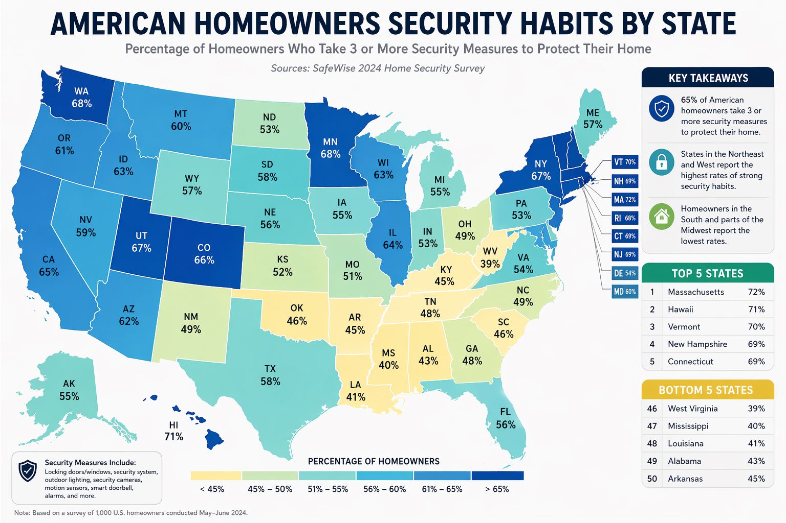
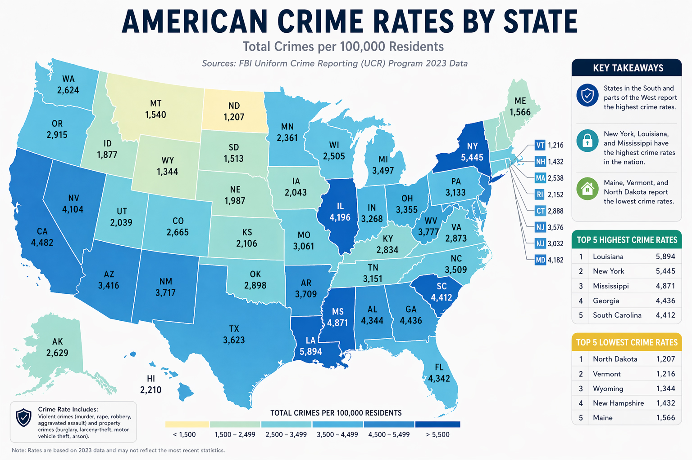

SHARE
Are you a part of the 75% of American homeowners who lock their doors when they’re away? When it comes to protecting their homes, American homeowners have different reasons why they do or don’t prioritize home security.
Home security is no longer a luxury—it’s a growing priority for homeowners across the United States. From smart doorbells to full surveillance systems, Americans are increasingly investing in ways to protect their homes and families. But how these habits vary by state reveals an interesting story about regional attitudes, risk perception, and lifestyle differences.
A Nationwide Snapshot
According to recent data, about 65% of American homeowners report using three or more security measures to safeguard their homes. These measures can include locking doors and windows, installing alarm systems, using security cameras, motion-sensor lighting, and smart home devices.
While this national average paints a picture of widespread awareness, a closer look at the state-by-state breakdown shows significant variation.
The Most Security-Conscious States
States in the Northeast and parts of the West lead the country when it comes to home security habits. These areas consistently report the highest percentages of homeowners adopting multiple security measures.
Top-performing states include:
- • Massachusetts (72%)
- • Hawaii (71%)
- • Vermont (70%)
- • New Hampshire (69%)
- • Connecticut (69%)
Several factors may contribute to these high numbers. Higher population density, greater access to technology, and increased awareness of property crime risks may all play a role. In many of these states, homeowners are also more likely to adopt smart home technology, integrating security into their daily routines.
Western states like Washington (68%), Colorado (66%), and California (65%) also show strong adoption, suggesting that tech-forward regions may be more inclined to embrace modern security solutions.

Regional Trends and Insights
Northeast: Leading the Way
The Northeast stands out as the most security-conscious region overall. States here consistently rank above the national average, suggesting a cultural emphasis on preparedness and protection.
West: Tech-Driven Adoption
Western states show strong numbers, likely driven by higher adoption of smart home technologies. Devices like video doorbells and app-controlled alarm systems are particularly popular in these areas.
Midwest: Middle Ground
Midwestern states tend to cluster around the national average. Homeowners here often rely on traditional security measures rather than newer, tech-heavy solutions.
South: Lower but Rising
The South shows the lowest adoption rates overall, but this may be changing. As smart home devices become more affordable and accessible, adoption is expected to increase.
What Drives These Differences?
Several factors help explain why security habits vary so widely
- • Urban vs. rural living: Urban areas often have higher perceived risk, leading to greater security investment.
- • Income levels: Higher-income households are more likely to afford comprehensive security systems.
- • Crime perception: Local crime rates—and how residents perceive them—play a major role in decision-making.
- • Crime perception: Local crime rates—and how residents perceive them—play a major role in decision-making. As you can see in the below map, 67% New York residents (one of the state with the highest crime rate) are more likely to take 3 or more security measures to protect their residency.

The Growing Role of Smart Security
One clear trend across all states is the rise of smart home security. Devices like video doorbells, connected cameras, and mobile-controlled alarm systems are making it easier than ever for homeowners to monitor their properties in real time.
As these technologies become more affordable, the gap between high- and low-adoption states may begin to close.What’s clear is that home security is becoming an increasingly important part of modern homeownership.
When it comes to protecting what matters most, you need more than just equipment—you need expertise you can trust. Oracle brings advanced technology, seamless integration, and proven reliability to every home, office, and business security setup. From smart monitoring systems to scalable enterprise-grade protection, we design solutions tailored to your specific needs—so you’re always one step ahead. Don’t leave security to chance—partner with a team that delivers intelligence, innovation, and peace of mind.